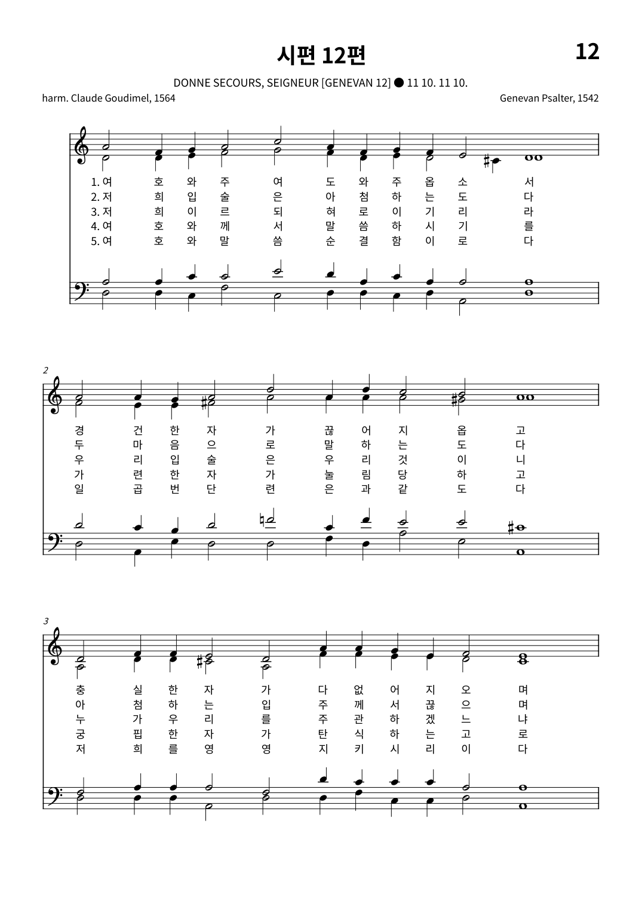

Psalm 12
DONNE SECOURS, SEIGNEUR [GENEVAN 12] · 11 10. 11 10.
English title: Help Us, O LORD, the Godly All Have Vanished
Tune: Genevan Psalter, 1542 · Harmony: Claude Goudimel, 1564 · Lyrics: Korean adaptation of Psalm 12 from the Korean Revised Version (AI draft adaptation · not yet theologically reviewed) · 5 stanzas
Score PDF MusicXML (for printing) MusicXML (for accompaniment, with prelude and repeats) Read Psalm 12 (Korean Revised Version)
Score
← Psalm 11 ListAccompaniment (in preparation)Psalm 13 →
Lyrics (Korean)
Stanza 1 (Ps. 1~2절 앞)
여호와 주여 도와주옵소서
경건한 자가 끊어지옵고
충실한 자가 다 없어지오며
이웃을 서로 속이나이다
여호와 주여 도와주옵소서
경건한 자가 끊어지옵고
충실한 자가 다 없어지오며
이웃을 서로 속이나이다
Stanza 2 (Ps. 2절 뒤~3절)
저희 입술은 아첨하는도다
두 마음으로 말하는도다
아첨하는 입 주께서 끊으며
자랑하는 혀 끊으시리라
저희 입술은 아첨하는도다
두 마음으로 말하는도다
아첨하는 입 주께서 끊으며
자랑하는 혀 끊으시리라
Stanza 3 (Ps. 4절)
저희 이르되 혀로 이기리라
우리 입술은 우리 것이니
누가 우리를 주관하겠느냐
이같이 저희 말하는도다
저희 이르되 혀로 이기리라
우리 입술은 우리 것이니
누가 우리를 주관하겠느냐
이같이 저희 말하는도다
Stanza 4 (Ps. 5절)
여호와께서 말씀하시기를
가련한 자가 눌림 당하고
궁핍한 자가 탄식하는 고로
이제 일어나 구원하리라
여호와께서 말씀하시기를
가련한 자가 눌림 당하고
궁핍한 자가 탄식하는 고로
이제 일어나 구원하리라
Stanza 5 (Ps. 6~8절)
여호와 말씀 순결함이로다
일곱 번 단련 은과 같도다
저희를 영영 지키시리이다
악인 처처에 횡행하도다
여호와 말씀 순결함이로다
일곱 번 단련 은과 같도다
저희를 영영 지키시리이다
악인 처처에 횡행하도다